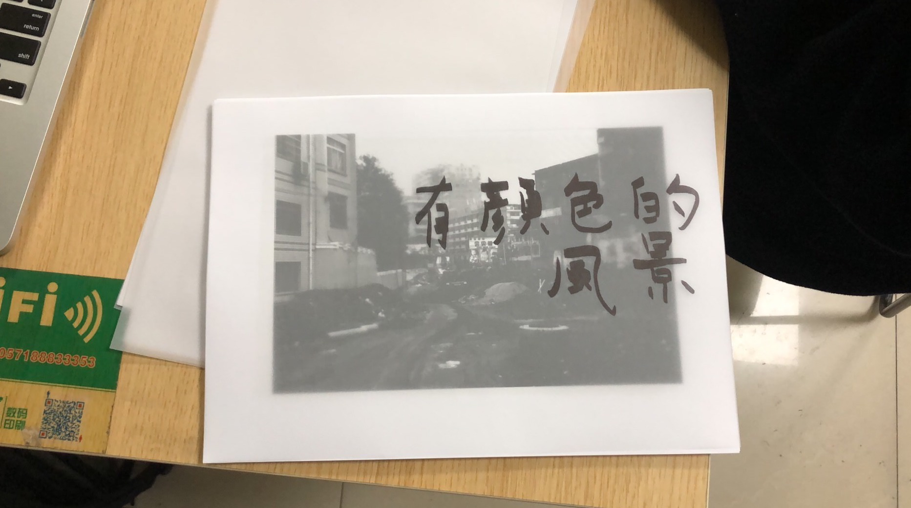
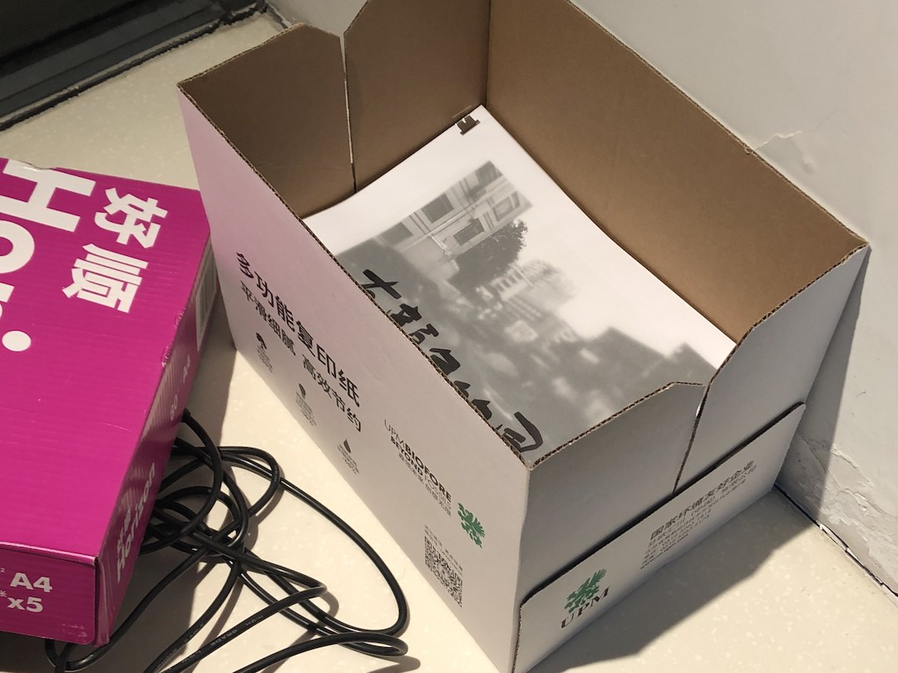
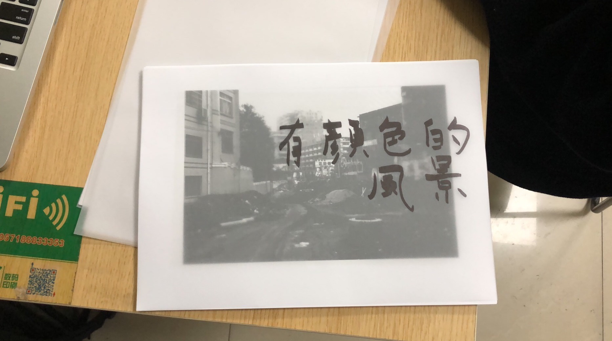
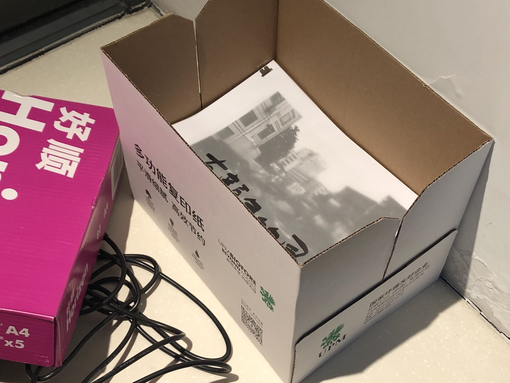

| 扁社 |
| 出版物 |
| 关于 |
|
若干年前，在某個雜誌上看到一篇某國內前輩攝影家的訪談，訪談中，這位攝影家在提到艾格斯頓時說希望讓顏色成為自己照片的一種語言，而不只是有顏色的照片。 在考慮給幾年前這些風景照取標題時回想起那篇訪談，再一次確認自己似乎是反過來的：只是希望讓這些照片帶有顏色。於是就成了「有顏色的風景」。
  |
|
若干年前，在某個雜誌上看到一篇某國內前輩攝影家的訪談，訪談中，這位攝影家在提到艾格斯頓時說希望讓顏色成為自己照片的一種語言，而不只是有顏色的照片。 在考慮給幾年前這些風景照取標題時回想起那篇訪談，再一次確認自己似乎是反過來的：只是希望讓這些照片帶有顏色。於是就成了「有顏色的風景」。
  |